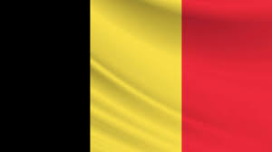
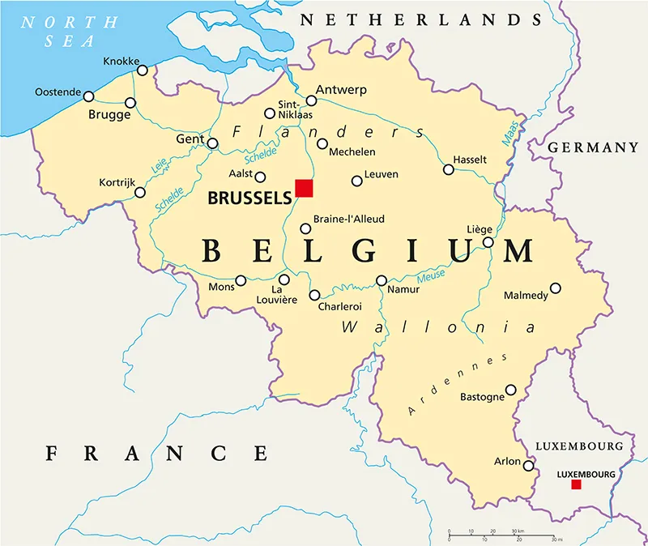
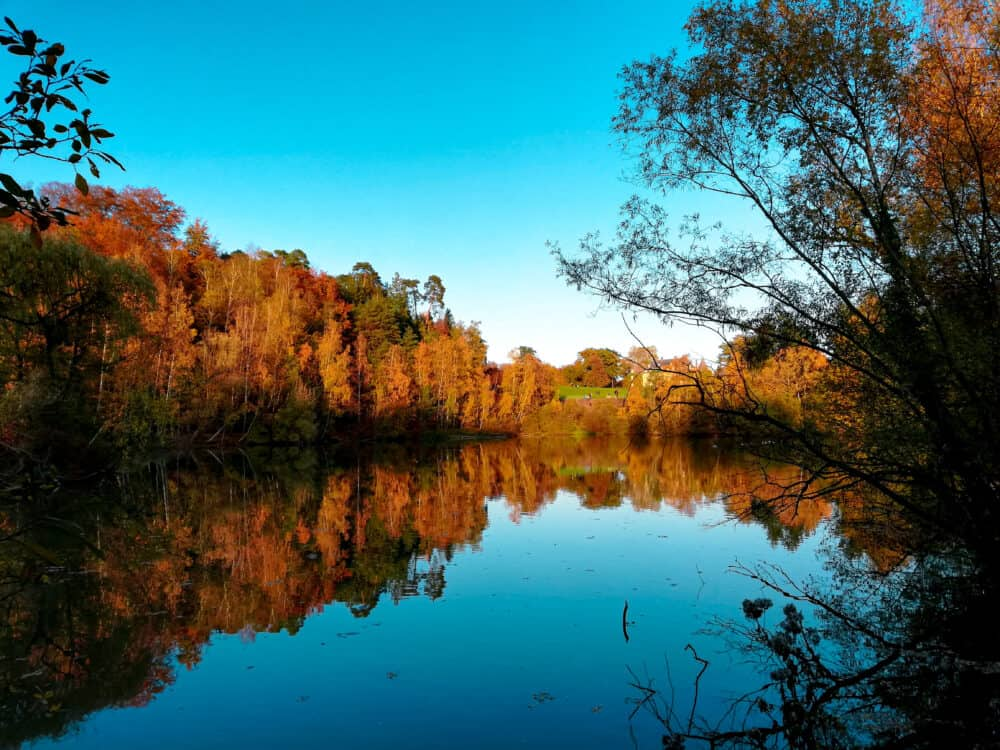
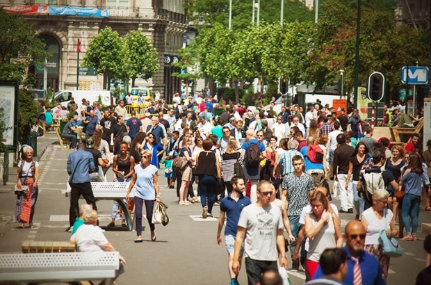
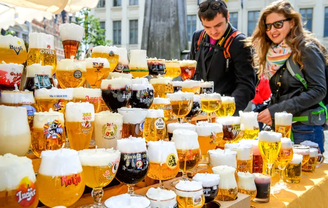
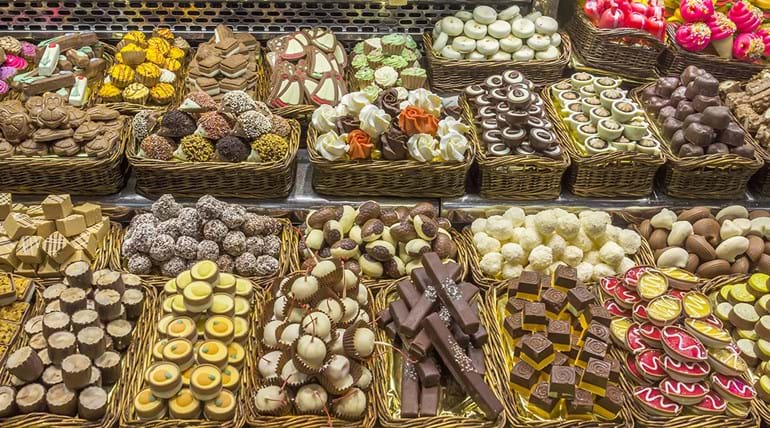
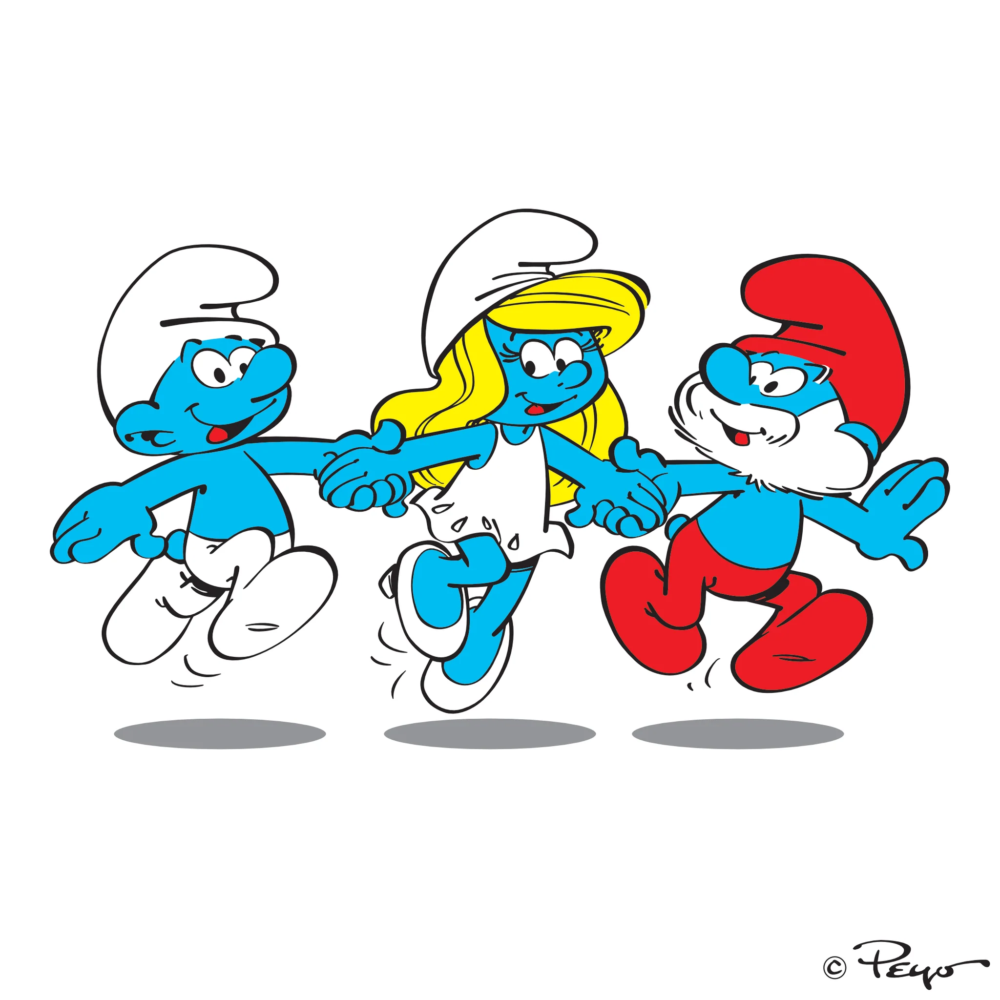
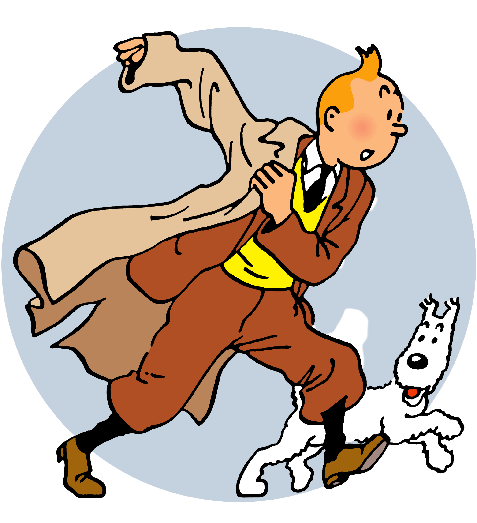
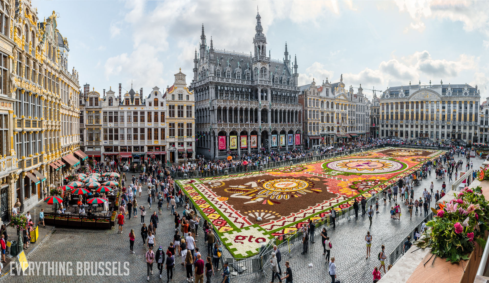

About Belgium
Belgium, a small yet captivating country located in Western Europe, has a rich and intricate history that spans centuries. Its origins can be traced back to the Roman Empire, where the region known as Belgium was part of the larger province of Gallia Belgica. Throughout its history, Belgium has been influenced by various European powers, including the Spanish, French, and Dutch.


History
Belgium's history spanned centuries, with its origins dating back to the Roman Empire. The region known as Belgium was part of the larger province of Gallia Belgica during Roman times. Throughout its history, Belgium was influenced by various European powers, including the Spanish, French, and Dutch. In 1830, Belgium gained independence from the Netherlands and established itself as a sovereign nation.

Natural Beauty
Belgium boasts stunning natural beauty that has captivated visitors for generations. In the past, the country was covered with lush forests, providing shelter to diverse wildlife species. The Ardennes region, with its rolling hills, dense woodlands, and picturesque rivers, offered breathtaking landscapes for nature enthusiasts and adventurers. Despite urbanization, Belgium has made efforts to preserve its natural heritage through the establishment of national parks and protected areas.

Population
Belgium is home to a diverse population, comprising several ethnic groups. The major communities include Flemish, Walloons, and Germans. Flemish, a Dutch dialect, is predominantly spoken in the northern region, while French is primarily spoken in the southern region. German-speaking communities are found in the eastern part of the country. This linguistic diversity has influenced Belgium's culture, literature, art, and music, adding to the country's vibrant cultural fabric.

Culture
Belgium's culture thrives on its linguistic and regional diversity. In the past, Dutch (Flemish), French, and German served as the official languages, reflecting the country's multilingual character. This linguistic richness is evident in various artistic expressions such as literature, art, music, and theater. Artists from different regions have contributed their unique perspectives, resulting in a vibrant cultural scene. Belgium is renowned for its beer, chocolate, waffles, and delicious cuisine, which have become symbols of Belgian culture worldwide.

Curiosities
- Belgian chocolate has been synonymous with quality and craftsmanship. Skilled chocolatiers, using traditional methods and the finest ingredients, create delectable treats that delight both locals and visitors alike.

- In the past, iconic characters such as Tintin, the Smurfs, and Lucky Luke originated from Belgian comic book artists. These beloved characters have captured the imagination of readers worldwide and have left an indelible mark on the comic book industry.


- Belgium's architectural heritage is a source of great intrigue. In the past, the country was adorned with magnificent medieval buildings, grand cathedrals, and picturesque canals. Cities like Brussels, Bruges, and Ghent showcased stunning examples of Gothic, Renaissance, and Baroque architecture, reflecting Belgium's rich history and artistic achievements.
